Bleak Forest
Character Rules
Created by Johnathan L Bingham
Advancement
The Bleak Forest uses an advancement system called Degrees of the Road. There are nine Degrees. Each Degree represents a meaningful threshold that you have attained. It’s not just about what you can do, but what you have survived and how the world has shaped you.
Degrees are earned through Ordeals – a scenario that as an agent of destiny, you have been called to face. Ordeals are presented through the agents of Fate (in Escape the Bleak Forest and Bleak Forest- Hail Three Wyrd Sisters, the Three Wyrd Sisters act as Fate’s avatars). While not random, Ordeals don’t necessarily occur at fixed points. Certain criteria have to be met, before the agent of Fate appears and an Ordeal arises. Through accumulated Fragments, Omens, and other plot triggers, Ordeals will present themselves once the specified conditions have been met. You advance when the Ordeal has been satisfied and the world confirms that you have changed.
Earning Advancement
You advance to the next Degree when you have met the conditions required. Based upon the particular implementation of the Bleak Forest rules, this can include:
- Completing the Ordeals the Degree requires. Requirements stack: each Degree needs every Ordeal required by the Degrees below it, plus its own (see The Nine Degrees)
- Accumulated the required number of Fragments about the Abrikoth active in your current Region
- Fulfilled your Drive; or updated it, if it has been completed or has become impossible
Degree advancement happens at the end of a session in which all the conditions were met. When you advance common advantages upon attaining a new degree can include:
- Gain skill points as listed in the Degree table
- Gain the Degree ability (unique to that Degree and dependent upon the version of Bleak Forest being used)
- Doom restores to its current maximum (for BF systems that use Doom)
- Doom maximum increases by 1, to a maximum of 12 at 7th Degree (for BF systems that use Doom)
The Nine Degrees
The Number of Ordeals required is a recommendation only and the specific Bleak Forest Implementations have more defined rules for advancement. Adjust these thresholds to suit your requirements of your style and taste.
| Degree | New Ordeals | Ordeal Req. (cumulative) | Skill Pts |
|---|---|---|---|
| 1st | — | — | 9 (start) |
| 2nd | 2 Minor | 2 Minor | +4 |
| 3rd | 3 Minor | 5 Minor | +4 |
| 4th | 1 Moderate (gate) | 5 Minor, 1 Moderate | +5 |
| 5th | 5 Moderate | 5 Minor, 6 Moderate | +5 |
| 6th | 1 Major (gate) | 5 Minor, 6 Moderate, 1 Major | +6 |
| 7th | 3 Major | 5 Minor, 6 Moderate, 4 Major | +6 |
| 8th | 3 Major | 5 Minor, 6 Moderate, 7 Major | +7 |
| 9th | 3 Major | 5 Minor, 6 Moderate, 10 Major | +7 |
Bands and Gates
A character climbs the nine Degrees in three bands, and the requirements stack: the Ordeal Req. column is the running total of Ordeals a character must have completed to stand at that Degree, and the New Ordeals column is what each step adds. Minor Ordeals carry a character from 1st to 3rd Degree: 2 Minor Ordeals reach 2nd Degree, and 3 more (5 in all) reach 3rd. Moderate Ordeals carry the character from 3rd to 5th: a single Moderate Ordeal, the gate, reaches 4th Degree, and 5 more (6 in all) reach 5th. Major Ordeals carry the character from 5th to 9th: a single Major Ordeal, the gate, reaches 6th Degree, and each 3 more after that adds a Degree: 4 in all reach 7th, 7 reach 8th, and 10 reach 9th. A full Fated Road is 5 Minor, 6 Moderate and 10 Major Ordeals, then the Reckoning: 22 Ordeals in all.
Gates. The first Degree of a new band is its gate, and one Ordeal of the new tier opens it. A character at 3rd Degree, with all 5 Minor Ordeals behind them, reaches 4th Degree by completing 1 Moderate Ordeal; more Minor Ordeals never open the way. The same is true at 5th Degree: with 5 Minor and 6 Moderate Ordeals behind them, the character reaches 6th by completing 1 Major Ordeal. Take note of the following concerning Ordeals:
- Ordeals below your band. A lower-tier Ordeal still changes the world, and it can still yield loot, Identity Marks and Fragments for other events. It does not count towards Degrees.
- Ordeals above your band. You may take on an Ordeal of a higher tier if you dare. It counts as two Ordeals of your current band, but no single Ordeal can raise a character more than one Degree. It never opens a gate early: a gate needs one Ordeal of the gate’s own tier, completed once you have met every requirement of the band below it.
- Failed Ordeals. A failed Ordeal counts for nothing towards Degrees. Its Blight applies, and the Goal’s Adversary gains a Hold (see The Reckoning).
- Parties. Every character who is the Lead or a Second in at least one of an Ordeal’s tasks counts it towards their own Degrees (see Party Size). Characters of different bands can share an Ordeal; each counts it by their own band.
Training Ordeals
Not every lesson is taught by the road. A character can seek out a trainer and undergo a Training Ordeal, an Ordeal built around one skill or Focus. Challenges decide who a character becomes and Fated Road Ordeals change the world; a Training Ordeal improves what a character can do. The Ordeal Generator builds and tracks them.
What it replaces
- One per band. Once in each band, a successful Training Ordeal of the band’s tier can replace one of the trainee’s Ordeals: at most three on the whole road.
- Never a gate. 4th and 6th Degree still need a real Moderate or Major Ordeal. You learn from a master, but you prove yourself in the world.
- Degrees only. A Training Ordeal gives no Thread, restores no Doom, and its failure gives the Adversary no Hold.
- The trainee alone. The trainee Leads every lesson. Others may act as Seconds and Support, but only the trainee counts the training. The trainer never joins the party.
The Adversary feels the time
The road does not wait. When a Training Ordeal ends, whatever its outcome, every Prepared Goal Ordeal makes its Omen roll at once. An active Ordeal’s Ruin die keeps falling on its usual schedule while you train.
Finding the trainer
What you train towards sets the tier. Like any Ordeal, a Training Ordeal begins with Fragments, here called leads: a rumour, a letter of introduction, a mark on a blade. A Minor training needs 2 leads, a Moderate 3 and a Major 4, and the last one tells you where the trainer is. The trainer must hold a higher rank than the one being trained towards.
| Tier | Training towards | Typical trainer |
|---|---|---|
| Minor | Skilled or Expert, or Competent Focus | A veteran in a market town or holdfast |
| Moderate | Master, or Accomplished Focus | A master in a city, monastery or hermitage |
| Major | Grand Master, or Adept Focus | A legend at the edge of the map, often inside an Ordeal’s footprint |
The price
Every trainer asks something. Roll 1d6:
| 1d6 | The trainer asks for |
|---|---|
| 1–2 | Coin: as much as the trainer thinks the trainee can bear |
| 3 | A service: an extra Proving lesson done for the trainer |
| 4 | An item of value |
| 5 | A Vow: a promise the trainee must keep |
| 6 | A secret, or a Fragment the trainee holds |
The lessons
A Training Ordeal’s tasks are lessons, each checked with the trained skill at the tier’s task BAM!. Its tasks may all use one attribute; this is the one exception to the rule that an Ordeal covers at least two.
| Lesson | What it is | Encounters |
|---|---|---|
| Drill | Repetition until the skill is flawless | None, but each attempt takes a full day |
| Test | Facing the trainer, at one step harder than the task BAM! | One sparring bout: damage to Vitality only, no Critical Damage |
| Proving | Using the skill in the world, in a trial the trainer chooses | Real encounters, at the usual number for the tier |
A Minor training is a Drill and a Proving; a Moderate training adds a Test; a Major training adds a second Proving.
The Patience die. In place of the Ruin die, set a d6 to 6 when training begins. It drops by 1 for each failed lesson, each natural 1, and each day lost to other business. At 0 the trainer dismisses the trainee, and the training fails.
The Mastery check. The training ends with a decisive check using the trained skill, at the tier’s Decisive BAM!: Difficult (16), Challenging (19) or Formidable (22). Each completed lesson grants Moderate Advantage, to a maximum of Extreme, as in any Ordeal.
What it brings
| Outcome | Result |
|---|---|
| Success | It counts as one Ordeal of its tier, if it can replace one. The trainee is Trained: at their next Degree, the next rank in the trained skill or Focus costs no skill points, and it may be taken beyond the usual one-rank-per-Degree limit. A Major training also grants a Knot, the trainer’s signature technique. |
| Near miss (failed by 1–2, not a natural 1) | As a success, but the trainer demands more: roll the price again and pay both. |
| Failure | It counts for nothing, the price is lost, and this trainer will not teach the trainee again in this band. A Moderate or Major failure also leaves a Minor Scar of humiliation or injury. |
Example: a Training Ordeal
Wren stands at 2nd Degree with 3 of the 5 Minor Ordeals she needs for 3rd. She has Lore at Skilled and wants the Competent Focus, so her player seeks a Minor Training Ordeal. It is her first training in the Minor band, and her next Degree is not a gate, so it can replace one Minor Ordeal. Two leads, a carter’s rumour and a letter in a dead monk’s satchel, bring her to an old archivist in a holdfast, whose price (rolled 5) is a Vow: never to burn a book. Her party heads on without her.
The Drill takes two days: she fails it once (Patience 5), then completes it. The Proving, recovering a ledger from a drowned cellar, brings one encounter, which she wins. With two completed lessons, the Mastery check of Difficult (16) falls two steps to Easy (10), and she succeeds. The training counts as her fourth Minor Ordeal, and at 3rd Degree her Competent Focus in Lore costs no skill points.
When the training ends, the Adversary feels it. The party’s Prepared Goal Ordeal makes its Omen roll at once, and it arrives: the Trouble begins while Wren is still a day’s walk away.
Skill Point Spending
Skill points earned on advancement may be spent immediately or held. Each rank costs 1 point, regardless of rank. Focuses are purchased separately at 1 point each. Your focus rank can never exceed your base skill rank:
- Apprentice → Skilled: 1 point
- Skilled → Expert: 1 point
- Expert → Master: 1 point
- Master → Grand Master: 1 point
- Focus: Competent; 1 point (requires Apprentice skill rank or higher)
- Focus: Accomplished; 1 point (requires Skilled skill rank or higher)
- Focus: Adept; 1 point (requires Expert base or higher)
You may never advance more than one rank in a single skill per Degree advancement, regardless of points available. This applies equally to Focus ranks. A fully maxed skill path (Grand Master rank + Adept focus) costs 8 points total across multiple Degrees. The road teaches slowly.